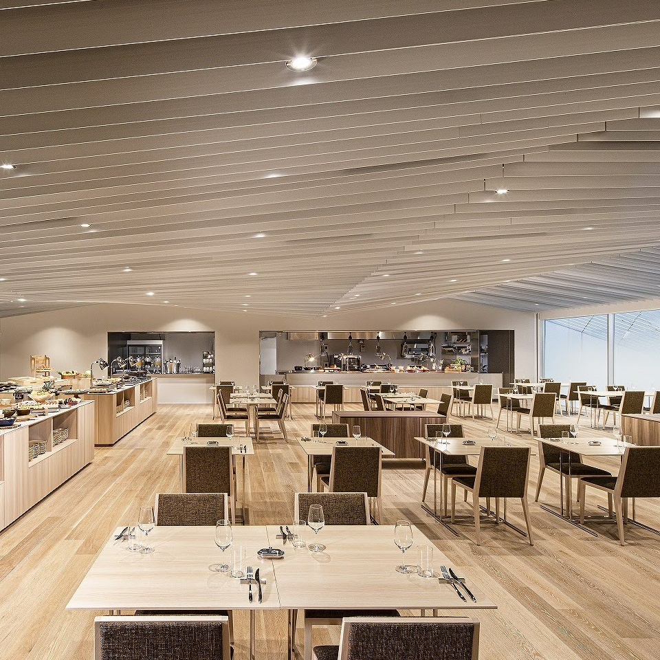
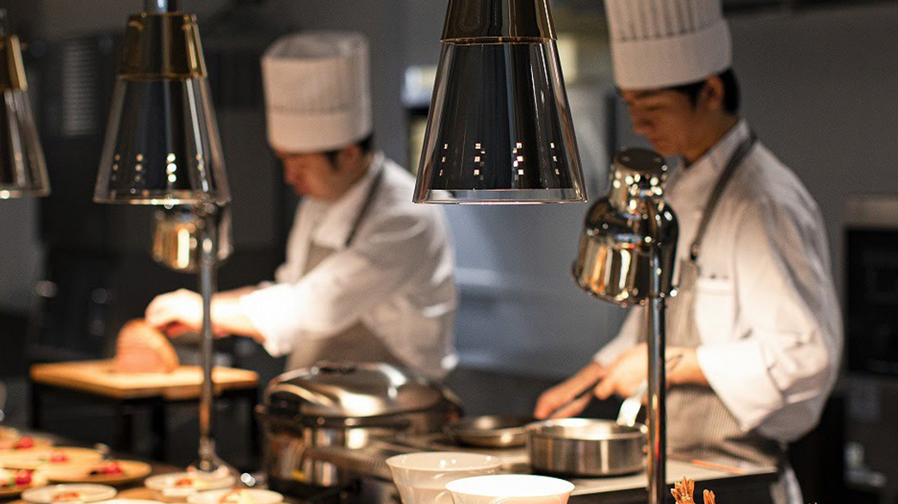
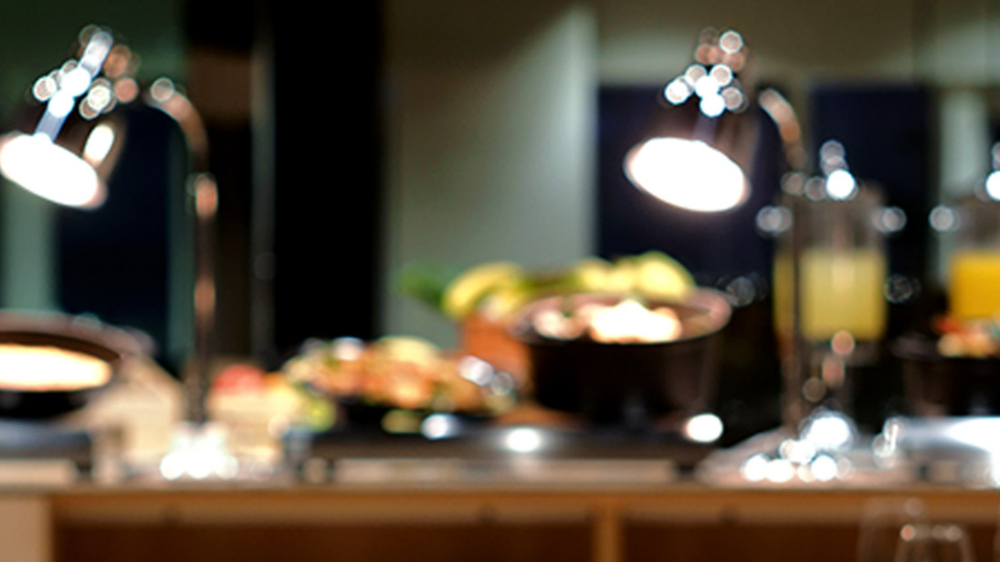
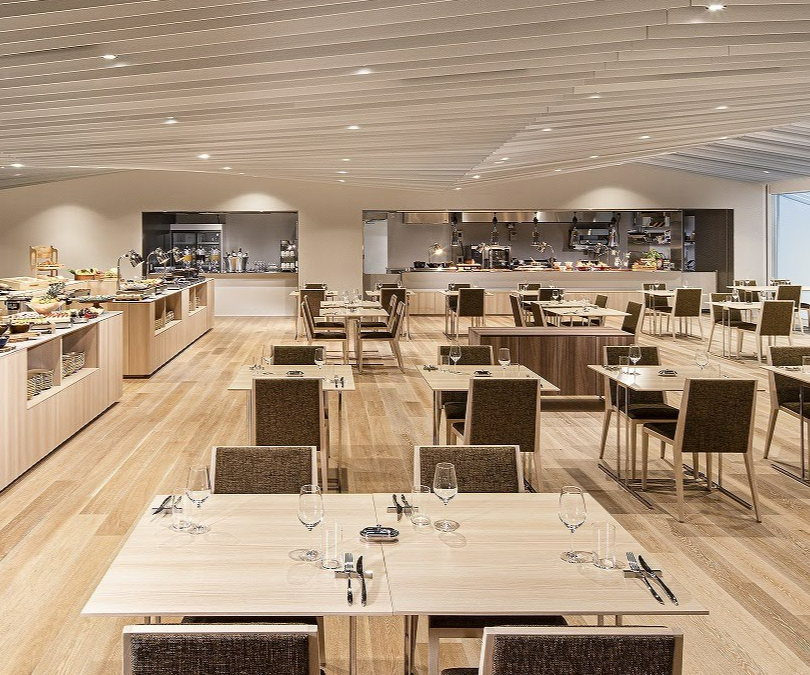
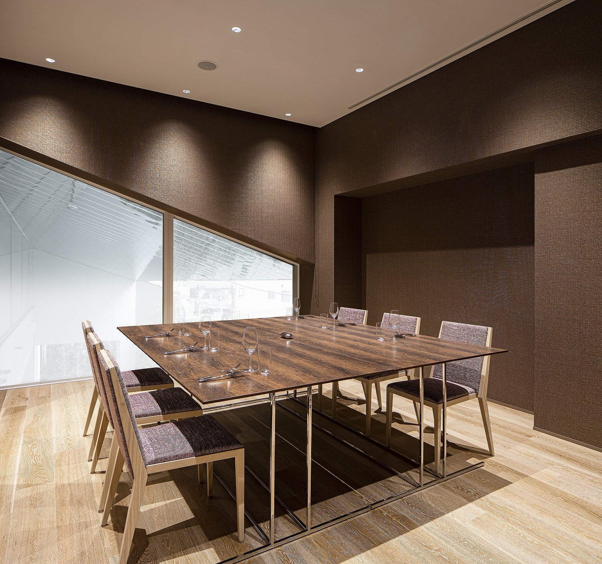
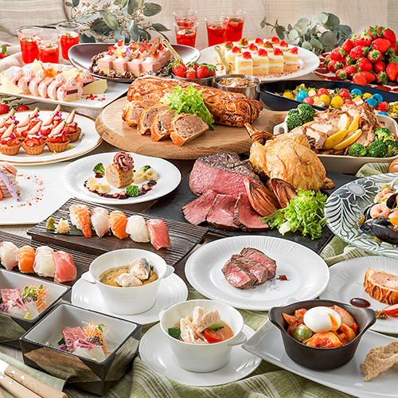

Galerie photos






Kevin, Loïc, May Nhia, Stéphanie, Estelle
Du 5 Avril au 27 Avril 2026
Restaurant buffet de l'Hotel Royal Classic Osaka, juste à Namba, pratique pour un repas en groupe avec réservation en ligne.






YURAYURA est le restaurant buffet du Hotel Royal Classic Osaka (quartier Namba). C'est une option claire pour un groupe de 5 personnes avec accès direct depuis la station Namba, réservation en ligne et plusieurs formules lunch/dinner.
Conversion indicative sur base 1 EUR = 183.02 JPY (BCE, 04/03/2026). Taux variable.